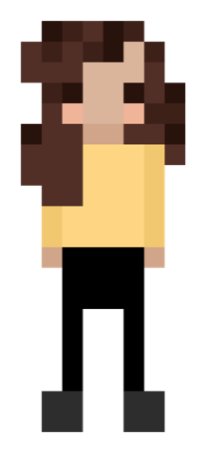
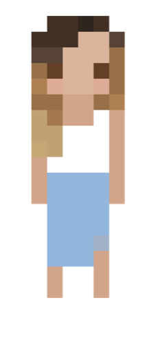

100 Doors is an interactive maze-based game that challenges players to solve randomized door combinations through sound recognition, drag-and-drop, and colour detection.


Built with hand-drawn assets and varying difficulty levels, the game was developed in Java with SoundRecognizer for microphone input and WebCamCapture for colour detection, emphasising creative problem-solving through diverse door mechanics and playful character selection.
In collaboration with Jaoiher BOULILA and Mihai BRANGA-PEICU
Anis Slimani
Inter-disciplinary Creative
100 Doors is an interactive maze-based game that challenges players to solve randomized door combinations using unusual interactions: sound recognition, drag-and-drop mechanics, and colour detection.
Built with hand-drawn assets and varying difficulty levels, the game was developed in Java with SoundRecognizer for microphone input and WebCamCapture for colour detection, emphasising creative problem-solving through diverse door mechanics and playful character selection.
In collaboration with Jaoiher BOULILA and Mihai BRANGA-PEICU